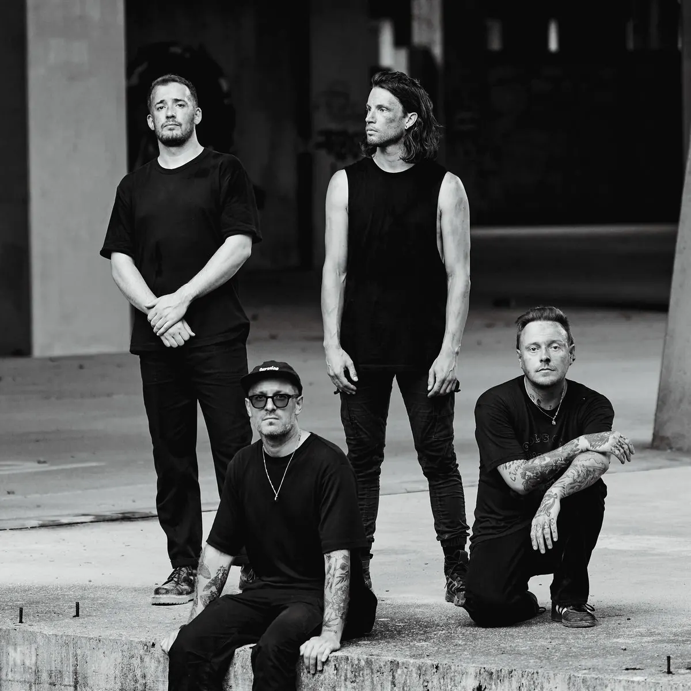

Publié le 8 octobre 2026

Le collectif de producteurs Arch, composé de xo, duno, mau_v et limak, investira l'Élysée Montmartre ce samedi 10 octobre 2026. Ce show immersif à 360° affiche complet depuis plusieurs semaines déjà. C'est la preuve éclatante d'un changement d'époque majeur : les créateurs de l'ombre de la scène rap et club deviennent de véritables têtes d'affiche.
Pourquoi le concert d'Arch Club à l'Élysée Montmartre est-il un événement historique ?
Le concert d’Arch Club ce samedi 10 octobre 2026 à l’Élysée Montmartre marque un tournant historique pour l’underground. Il consacre enfin les producteurs comme des artistes de scène à part entière. Traditionnellement relégués derrière les rappeurs, les membres d'Arch ont rempli cette salle parisienne mythique. Ils l'ont fait sans avoir besoin de têtes d'affiche vocales pour attirer les foules. Grâce à un dispositif scénique immersif à 360 degrés, le collectif transforme le beatmaking en spectacle visuel et sonore. Le public ne vient plus seulement écouter des morceaux. Il vient vivre une communion brute. Les frontières entre rap contemporain et musique électronique s'y effacent. Ce succès insolent montre que l’identité d'un projet réside désormais dans sa texture sonore. C’est une émancipation définitive pour les architectes de l'ombre.
Un laboratoire créatif à la croisée des genres
arch n’est pas un label de rap ordinaire : c’est un véritable laboratoire artistique. Fondé par xo, duno, mau_v et limak, le collectif refuse de s’enfermer dans une seule case. Leur univers oscille constamment entre l’électronique expérimentale et la trap brute. Cette musique est pensée pour faire vibrer les corps autant que pour accompagner l'image. Chaque membre apporte sa propre touche esthétique tout en conservant une vision commune solide. Ce positionnement hybride leur permet de parler à deux publics différents. D’un côté, les amateurs de musiques électroniques exigeantes apprécient leurs rythmes complexes. De l’autre, la nouvelle génération rap y trouve une énergie sombre et frénétique irrésistible. Cette alliance se retrouve aussi chez d’autres figures de l’underground actuel. On pense notamment à l'album NODA de Ptite Soeur, entièrement produit par neophron. Ce projet récent partage cette même volonté d'exploser les codes de la trap. Ces connexions démontrent la vitalité d’une scène française qui refuse les étiquettes faciles.
Comment se déroule la soirée de l'Arch Club ?
La soirée de l'Arch Club à l'Élysée Montmartre ce samedi 10 octobre 2026 propose une programmation millimétrée. Les portes ouvriront à 18h30 pour accueillir un public impatient de vivre l'expérience à 360 degrés. Les quatre producteurs se succéderont sur scène pour des sets individuels de cinquante minutes chacun. C'est limak qui lancera les hostilités à 19h30 avec ses sonorités lourdes et percussives. Il sera suivi par duno à 20h20, puis par xo à 21h10. Enfin, mau_v viendra clôturer la nuit à partir de 22h00. Chaque artiste proposera un univers visuel propre, synchronisé avec les basses. Ce format permet de maintenir une tension constante tout au long de la soirée. Si vous avez manqué vos places, surveillez notre agenda des concerts à Paris pour leurs prochaines dates.
| Heure | Artiste | Type de set |
|---|---|---|
| 18h30 | Ouverture des portes | Accueil du public |
| 19h30 | limak | Live production et DJ set |
| 20h20 | duno | Live production et DJ set |
| 21h10 | xo | Live production et DJ set |
| 22h00 | mau_v | Live production et DJ set |
La revanche des créateurs de l'ombre
Pendant des années, les beatmakers ont souffert d’un manque cruel de reconnaissance. Leur nom apparaissait souvent en tout petit sous les titres des rappeurs stars. Aujourd’hui, la donne a totalement changé. Grâce à des plateformes comme SoundCloud, une nouvelle culture d’auditeurs passionnés s’est développée. Les fans les plus pointus cherchent désormais activement les producteurs derrière leurs morceaux préférés. Cette évolution logique mène aujourd'hui à des concerts complets sous leurs propres blazes. La force d'Arch réside dans leur capacité à fédérer une communauté fidèle autour d'un univers global. Le public ne se déplace plus pour un seul artiste, mais pour soutenir un collectif soudé. C'est une excellente nouvelle pour l'indépendance et la création artistique en France. Elle prouve que l’expérimentation sonore peut remplir des salles historiques sans concession commerciale. L'Élysée Montmartre va trembler ce samedi, et ce n’est que le début d'une longue aventure. Le collectif prépare déjà la suite de sa tournée avec une date très attendue à Lyon. L'avenir de l'underground s'écrit maintenant.